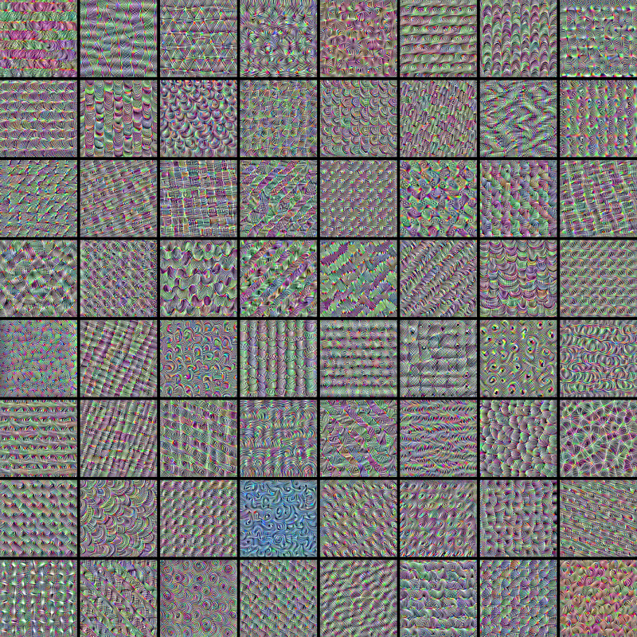

学完这一节，你能
- 解释全连接网络处理图像时参数量为何迅速增长
- 手算一个二维卷积，并由步幅、填充推导输出尺寸
- 说清输入通道、卷积核与输出通道之间的对应关系
- 区分标准卷积、深度可分离卷积与常见卷积变体
- 说明池化、归一化、激活与全连接层各自解决什么问题
从图像分类问题出发
为什么图像不适合直接“拉平”
图像分类把一张图像映射成一组类别分数，再通过 Softmax 得到概率，最后用交叉熵衡量预测与真实标签之间的差距。困难不在最后的分类器，而在于如何得到既紧凑、又能保留空间结构的图像表示。
图像→特征提取器学习表示
→
线性分类器输出 logits
→
猫 0.821狗 0.123鸟 0.041
全连接网络的问题：参数量与空间结构
将 32 × 32 × 3 的 RGB 图像拉平成 3,072 维向量后，每个隐藏神经元都要连接全部像素。若设置 4,096 和 2,048 个神经元的两层隐藏层，权重与偏置数量约为：
全连接网络如何处理一张图像
连接为何“稠密”下一层的每个神经元都读取上一层的全部输出，因此每相邻两层之间都需要一张完整权重矩阵。
空间信息去了哪里拉平后只剩向量下标，原本上下、左右相邻的像素不再以二维邻接关系呈现。
(3,072 + 1) × 4,096+(4,096 + 1) × 2,048+(2,048 + 1) × 10≈ 2,100 万
- (m + 1) × n
- 从 m 个输入连接到 n 个神经元时的参数量；额外的 1 表示每个输出神经元都有一个偏置。
- 三项相加
- 分别对应输入层到隐藏层 1、隐藏层 1 到隐藏层 2，以及隐藏层 2 到输出层。
更关键的是，拉平操作让“相邻像素通常相关”这一先验消失了。CNN 用两个约束回应这个问题：
LOCAL局部连接
一个神经元只观察输入中的小窗口，也就是它的局部感受野。
SHARED权重共享
同一个卷积核扫描整幅图像，在不同位置寻找同一种模式。
引导问题：如果一条边从图像左侧移到右侧，我们是否需要重新学习一套“右侧边缘检测器”？卷积的回答是：不需要。
卷积的核心计算
一个小窗口，如何提取局部模式
卷积核是一组可学习的权重。它在输入上逐位置滑动，每次取出一个局部窗口，做对应元素乘积再求和，得到特征图中的一个数。
Y[i, j] =
Σu=0Kh−1Σv=0Kw−1
X[i + u, j + v] · K[u, v]
- X
- 输入图像或输入特征图。
- K
- 卷积核；Kh、Kw 分别是核的高度和宽度。
- Y
- 输出特征图。
- i, j
- 当前输出元素在 Y 中的行、列坐标。
- u, v
- 卷积核内部的行、列坐标，也是求和变量。
- Σ
- 将局部窗口内 Kh × Kw 个对应元素乘积全部相加。
适用条件：这里先写单通道、步幅为 1、无填充且不含偏置的形式。多通道卷积还要对所有输入通道求和；一般步幅与填充会进一步改变 X 的取值坐标。
交互演示 用垂直边缘核扫描 5 × 5 输入
窗口位置 (1, 1)
1 / 9
平移等变，不等于平移不变
同一个卷积核在所有位置共享：输入中的模式向右移动，输出特征也会相应向右移动。这叫平移等变，可写作 f(Tx) = T f(x)。其中 x 是输入，f 是卷积操作，T 是平移算子；等式表示“先平移再卷积”和“先卷积再平移”得到相同结果。输出跟着输入移动，并不是输出完全不变。
等变 Equivariance输入怎么移动，特征图就怎么移动
不变 Invariance输入发生变化，最终表示尽量保持不变
标准卷积并不天然对旋转、缩放或一般仿射变换等变。数据增强是提升这些变化下鲁棒性的常用手段。
控制特征图的空间尺寸
03 · 空间尺寸Padding · Stride
步幅决定采样密度，填充决定边界
步幅（stride）是卷积核每次移动的格数；步幅越大，输出越小。填充（padding）是在输入边缘补值，最常见的是补零，用来保留边缘信息或控制输出大小。
输出尺寸
Wout = ⌊ (Win + 2P − K) / S ⌋ + 1
- Win
- 输入特征图的宽度。
- Wout
- 输出特征图的宽度。
- K
- 卷积核在该方向上的尺寸。
- S
- 步幅，即窗口每次移动的格数。
- P
- 输入两侧各补 P 格，因此总共增加 2P。
- ⌊ · ⌋
- 向下取整，只计算卷积核能够完整落入的起始位置。
适用条件：公式按宽度方向计算，假设空洞率为 1。高度方向用同一公式分别代入 Hin、核高、纵向步幅与填充。
从灰度图到多通道特征
一个输出通道，要汇总所有输入通道
若输入有 Cin 个通道，一个标准卷积核也必须有相同的通道深度。每个输入通道先完成空间卷积，结果相加后形成一个输出通道；使用 Cout 组卷积核，就得到 Cout 个输出特征图。
RGB3 个输入通道
→
3 × 3 × 33 × 3 × 33 × 3 × 33 × 3 × 34 组卷积核
→
4 个输出通道
标准卷积与深度可分离卷积
标准卷积同时处理空间与通道混合。深度可分离卷积把它拆成两步：先用 Depthwise 卷积逐通道提取空间信息，再用 1 × 1 的 Pointwise 卷积混合通道。
| 方法 | 参数量公式 | 3 输入 → 4 输出，3 × 3 核 |
|---|
| 标准卷积 | K² · Cin · Cout | 3 × 3 × 3 × 4 = 108 |
| 深度可分离卷积 | K² · Cin + Cin · Cout | 3 × 3 × 3 + 3 × 4 = 39 |
- K
- 正方形卷积核的边长，因此每个空间卷积核有 K² 个权重。
- Cin
- 输入通道数；Depthwise 阶段为每个输入通道分别学习一个空间核。
- Cout
- 输出通道数；Pointwise 阶段用 Cin × Cout 个 1 × 1 权重混合通道。
- 计数范围
- 表中只统计卷积核权重，且 Depthwise 的通道倍增系数为 1。若两个阶段都使用偏置，还需再加 Cin + Cout。
参数从 108 降到 39，不代表任何任务上都同样好；它换来的是更低的计算与参数成本，因此常见于移动端网络。
扩展卷积的采样方式
05 · 采样变体感受野 · 上采样 · 自适应形状
三种常见卷积变体
01空洞卷积
在采样点之间留出间隔，不增加核参数量就扩大感受野。有效核尺寸为 Keff = K + (K − 1)(d − 1)。其中 K 是原始核尺寸，d 是空洞率，相邻采样点间隔为 d；Keff 是它覆盖输入的等效宽度。d = 1 时退化为普通卷积。
02转置卷积
学习把低分辨率特征映射到更高分辨率，常用于分割和生成模型。它不是普通卷积的数值逆运算。
03可变形卷积
为规则网格上的采样点学习二维偏移，使感受野适应目标的几何形状。
小结：标准卷积改变的是局部模式提取；这些变体进一步改变“在哪里采样”或“输出到多大空间”。
压缩空间信息
06 · 空间压缩Max Pooling · Average Pooling
池化：用一个值概括一个局部区域
池化按通道独立进行，不改变通道数量。最大池化保留窗口内最强响应，平均池化保留整体水平；二者都能降低空间分辨率和后续计算量。
交互演示 比较 2 × 2 最大池化与平均池化
因此可以这样记：卷积优先保留“模式出现在哪里”的结构，池化逐步弱化精确位置，分类头最终更关心“模式是否出现”。
让训练更稳定、更鲁棒
模型没有的几何先验，用数据和统计补上
数据增强在不改变标签语义的前提下，对训练图像做裁剪、翻转、颜色扰动等变换，让模型见到同一类别的更多合理变化。旋转或缩放是否可用，必须由具体任务决定。
同一训练样本的四种视图。增强改变像素呈现，但“家猫”这一标签保持不变。照片：Domestic Cat，公共领域。
归一化在“哪些维度”上统计
通用形式是先减均值、除以标准差，再用可学习的缩放 γ 与偏移 β 恢复表达能力。不同方法的关键区别，是对形状 N × C × H × W 的哪些维度求统计量。
y = γ ·(x − μ) / √(σ² + ε)+ β
- x / y
- 归一化前的输入值与变换后的输出值。
- μ
- 选定统计范围内 x 的均值。
- σ²
- 同一统计范围内 x 的方差。
- ε
- 很小的正常数，防止方差接近 0 时除零。
- γ / β
- 训练得到的缩放与偏移参数，使层可以恢复或重新调整特征分布。
- N, C, H, W
- 批量大小、通道数、特征图高度与宽度。
| 方法 | 每组统计的范围 | 特点 |
|---|
| Batch Norm | 固定通道 C，统计 N、H、W | 训练依赖批次；推理使用训练期移动均值与方差 |
| Layer Norm | 对每个样本统计其特征维度 | 训练与推理行为一致，不依赖批大小 |
| Instance Norm | 固定样本 N 和通道 C，统计 H、W | 常用于风格迁移等图像生成任务 |
| Group Norm | 把通道分组，组内统计 C、H、W | 小批量训练时通常比 Batch Norm 稳定 |
把组件组装成分类器
从像素到类别，是一条逐级抽象的路径
卷积本质上仍是线性运算。若连续堆叠线性层，整体仍可合并成一次线性变换，因此需要 ReLU 等非线性激活函数。浅层通常响应边缘、颜色和纹理，深层逐步组合出部件与对象级语义。
28 × 28输入图像
→
5 × 5卷积
→
非线性ReLU
→
2 × 2池化
→
5 × 5卷积
→
全局组合分类头
浅层边缘 · 方向 · 颜色
中层纹理 · 角点 · 局部部件
深层对象部件 · 类别语义

如何读这张图
不同卷积核会偏好不同的纹理基元
每个方格都是通过梯度上升生成的合成输入，目标是让一个固定滤波器产生尽可能强的响应。它不是自然图像，也不是某张图像的特征图；它表达的是卷积核“最想看到”的局部模式。
可视化模型：ResNet50V2，层 conv3_block4_out。来源：Keras 官方示例。
为什么 CNN 参数更少
以一个用于 MNIST 的小型网络为例：全连接方案约有 101.77k 个参数；由两层卷积和一个分类头组成的 CNN 共有 8,490 个参数。数量级差异来自局部连接与权重共享，而不是因为 CNN 忽略了整张图；随着层数增加，感受野会逐层扩大。
这一节的主线：卷积负责在各处复用局部模式检测器，非线性提供表达能力，池化压缩位置细节，归一化稳定特征分布，最后由分类头汇总为类别分数。
把 CNN 看成三个连续的问题
01看哪里？卷积核的大小、步幅、填充和空洞率决定采样位置与感受野。
02学什么？多组共享卷积核从局部结构中学习不同模式，并逐层组合。
03如何做决定？激活、归一化与池化加工特征，分类头把全局证据变成类别分数。
离开前自检
输入为 32 × 32 × 3，使用 16 个 3 × 3 卷积核、步幅 1、填充 1。输出形状是什么？忽略偏置时共有多少参数？
查看答案
输出为 32 × 32 × 16：填充 1 抵消了 3 × 3 核造成的边缘缩减，而 16 个卷积核产生 16 个输出通道。参数量为 3 × 3 × 3 × 16 = 432，四个因子依次表示核高、核宽、输入通道数和输出通道数。